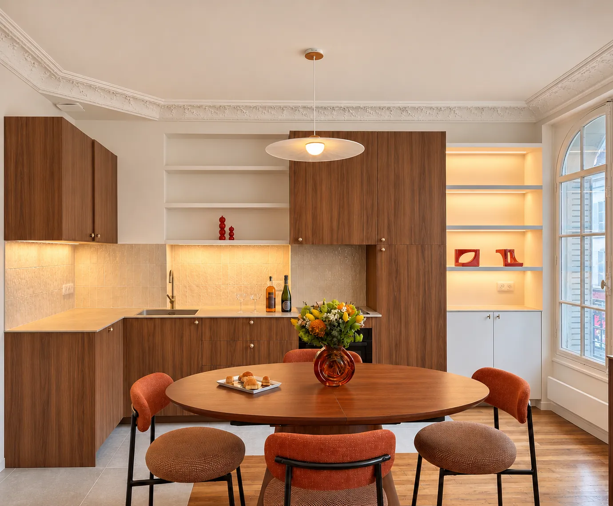

Stouls Studio / Apartment search
The right apartment, seen with an interior architect’s eye
I look for the apartments, visit them and send you a video of each one. My eye as an interior architect does the rest: seeing what a place could become, imagining the transformation, estimating the renovation. You can make an offer knowing what you are getting into.
What you get for each apartment
- A walk-through video, room by room, with the views onto the street and the stairwell.
- My opinion on what I can see of the structure, moisture, wiring, plumbing, windows and heating.
- My opinion of the apartment and a short written report: what could be done with it, and what could not.
- The energy rating and what it means for renting the place.
- The building and its copropriété (the co-ownership): the minutes of the owners’ general meetings, recent work, work voted on but not yet paid for, the building’s charges.
- A first renovation estimate, so that you compare two apartments on the full cost of each.
When an apartment suits you and is worth going further, I can draw a first sketch of what the new layout could be.
Photos in a Paris listing are taken with a wide lens on a sunny day. The visit is where you learn that the bedroom faces a wall 2 m (about 6 ft) away, or that the only place for a washer is the entry hall.

What I look for
The apartments worth buying from abroad are usually the ones that show badly. A dark hallway that can be opened up. A kitchen at the back that can move to the living room. A 50 m² (540 sq ft) one-bedroom that becomes a two-bedroom once the layout is redrawn.
Those are the ones other buyers pass over, and the ones where design adds the most value for the same budget.
I also tell you which ones to pass on. A beautiful apartment under a roof that the building has not voted to repair is not a bargain.
After the search
The search is the first step of a complete service that runs to the handover of a finished, furnished apartment: design, technical drawings, final quote, site supervision, furnishing. See every step, from the search to the keys.
Questions about the search
How is this different from a buyer’s agent?
A buyer’s agent judges location and price. I also give you my opinion on the renovation: structure, plumbing runs, the state of the wiring, what the building is likely to allow. You get a purchase price and a renovation estimate side by side.
Do you find off-market apartments?
Sometimes, through agents and contractors I work with. Most good apartments in Paris are listed, and go quickly. What matters is seeing them in the first days and knowing at once whether the layout can be fixed.
Who signs the purchase?
You do, with a notaire, in your own name or through your own company. The sale itself goes through licensed Paris real estate agents and the notaire. My part is the brief, the visits and my assessment of each apartment. I do not hold your money and am not a party to the sale.